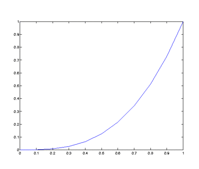
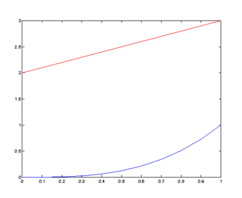
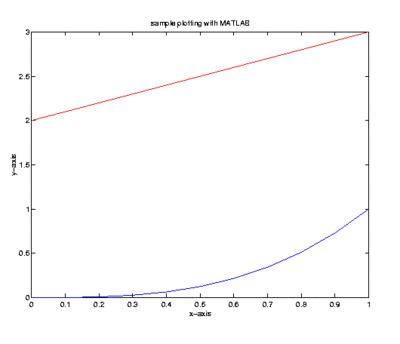

Représentations visuelles
Une des qualités principales de Matlab est sa capacité à visualiser les résultats mathématiques. Il peut tracer des graphes de fonctions, représenter des ensembles de données graphiques, etc l'accent de ce document est sur la représentation des fonctions. Ce choix est motivé par nos besoins personnels.
Tracer en deux dimensions avec Matlab
Supposons que nous voulons tracer le graphe d'une fonction \(f\) définie sur un intervalle \([a,b]\).
La première étape est de créer une liste x de points qui forment un maillage de l'intervalle \([a,b]\). Nous utilisons bien souvent \(N + 1\) points également distancés de l'intervalle \([a,b]\). Une façon de créer une telle liste est avec la commande x = a : h : b où h = (b-a)/N. Une autre façon de créer une telle liste est avec la commande x = linspace(a,b,N+1).
Exemple: On considère la fonction \(f\) définie par \(\displaystyle y = f(x) = x^3\) sur l'intervalle \([0,1]\). Les deux exemples suivants illustrent comment générer \(11\) points également distancés (\(10\) sous-intervalles) incluant les deux points limites de l'intervalle.
>> x = 0:0.1:1
x =
Columns 1 through 7
0 0.1000 0.2000 0.3000 0.4000 0.5000 0.6000
Columns 8 through 11
0.7000 0.8000 0.9000 1.0000
ou
>> x = linspace(0,1,11)
x =
Columns 1 through 7
0 0.1000 0.2000 0.3000 0.4000 0.5000 0.6000
Columns 8 through 11
0.7000 0.8000 0.9000 1.0000
Pour évaluer la fonction \(f\) définie par \(\displaystyle f(x) = x^3\) aux \(11\) points que l'on vient de générer, une simple opération sur les tableaux suffit.
>> y = x.^3
y =
Columns 1 through 7
0 0.0010 0.0080 0.0270 0.0640 0.1250 0.2160
Columns 8 through 11
0.3430 0.5120 0.7290 1.0000
Chacune des composantes de y est le cube de la composante corresponde de x. Finalement, nous fessons appel à la fonction plot de Matlab pour tracer le graphe de \(f\) sur l'intervalle \([0,1]\). La fonction plot utilise une interpolation linéaire entre les \(11\) points également distancés pour approcher le graphe de la fonction \(f\).
>> plot(x,y)
Après avoir pressé la touche Enter, une nouvelle fenêtre s'ouvre avec une figure contenant le graphe de la fonction.

Nous obtenons un graphe plus précis de la fonction en utilisant plus de points également distancés.
Il est possible d'inclure les graphes de plusieurs fonctions dans la même figure. La commande hold on après avoir produit la première figure force Matlab à tracer les graphes suivants dans la figure existante. La commande hold off retourne Matlab à son mode par défaut qui est de remplacer la présente figure par une nouvelle figure.
Exemple: À l'aide de la variable x définie ci-dessus et en assumant que la figure précédente existe toujours (i.e. elle n'a pas été fermée), Les commandes suivantes ajoutent la droite \(y = x + 2\) à la figure contenant le graphe de \(f\).
>> hold on >> z = x + 2; >> plot(x,z,'r')
La figure est maintenant

Dans l'exemple précédent, le résultat de l'expression z = x + 2 dans Matlab est d'additionner la valeur \(2\) à chacune des composantes de x et d'emmagasiner les résultats dans la variable z. La \(\displaystyle i^{e}\) composante de z est la somme de la \(\displaystyle i^{e}\) composante de x et de \(2\). C'est un des comportement anormal de Matlab.
L'option 'r' de la commande plot précédente force Matlab à tracer la droite \(y = x + 2\) en rouge.
Un titre et des étiquettes pour les axes peuvent être ajoutés à la figure à l'aide des fonctions title pour produire le titre, xlabel pour ajouter une étiquette à l'axe des \(x\) et ylabel pour ajouter une étiquette à l'axe des \(y\). L'exemple suivant montre comment utiliser ces fonctions.
Exemple: Supposons que les commandes suivantes font parties de la session qui a produit la figure précédente et que cette figure existe toujours (i.e. elle n'a pas été fermée).
>> title('sample plotting with MATLAB')
>> xlabel('x-axis')
>> ylabel('y-axis')
Le résultat de ces commandes est l'ajout du titre sample plotting with MATLAB et des étiquettes aux axes de la figure précédente pour obtenir la figure suivante.

Interpolationo
L'interpolation polynomiale peut être utilisée avec Matlab.
Exemple: Nous traçons l'interpolation linéaire de la fonction \(f\) associée aux données dans le tableau ci-dessous.
| x | 0 | 0.7854 | 1.5708 | 2.3562 | 3.1416 |
|---|---|---|---|---|---|
| y | 0 | 0.5554 | 1.5708 | 1.6661 | 0.0000 |
Les données pour \(x\) et \(y\) sont représentées par deux vecteurs dans Matlab.
>> x = [ 0 0.7854 1.5708 2.3562 3.1416 ]
x =
0 0.7854 1.5708 2.3562 3.1416
>> y = [ 0 0.5554 1.5708 1.6661 0.0000 ]
y =
0 0.5554 1.5708 1.6661 0
Il est en fait plus facile de tracer l'interpolation linéaire de \(f\) que d'évaluer \(f\) à des points. Si nous assumons que la figure précédente n'est plus présente (ou que la commande hold off a été utilisée), alors la commande suivante trace l'interpolation linéaire de \(f\).
>> plot(x,y);

L'interpolation linéaire de \(f\) peut être évaluée à plusieurs points à l'aide de la fonction interp1 de Matlab.
Exemple: Supposons que nous voulions évaluer l'interpolation linéaire de la fonction \(f\) aux points \(0, \pi/10 , \pi/5 , 3\pi/10, \ldots, \pi\). Nous pouvons représenter ces points dans Matlab à l'aide de la liste suivante.
>> z = linspace(0,pi,11)
z =
Columns 1 through 9
0 0.3142 0.6283 0.9425 1.2566 1.5708 1.8850 2.1991 2.5133
Columns 10 through 11
2.8274 3.1416
La commande suivante dans Matlab calcul la valeur de l'interpolation linéaire de \(f\) aux \(11\) points également distancés donnés par z.
>> w = interp1(x,y,z,'linear')
w =
Columns 1 through 9
0 0.2222 0.4443 0.7585 1.1646 1.5708 1.6089 1.6470 1.3329
Columns 10 through 11
0.6665 0.0000
La \(\displaystyle k^{e}\) composante de w est la valeur de l'interpolation linéaire de la fonction \(f\) à la \(\displaystyle k^{e}\) composante de z. Les commandes suivantes tracent les points de coordonnées \((x,y)\) où \(x\) et \(y\) sont les \(\displaystyle k^{e}\) composantes de z et w respectivement pour \(k = 1, 2, \ldots, 11\).
>> hold on >> plot(z,w,'or');

Le troisième argument de plot ci-dessus force Matlab à tracer seulement un cercle rouge pour chacun des points.
Il y a d'autres méthodes d'interpolation que linéaire (le défaut)
comme cubique et spline
. Pour utiliser ces méthodes,
il suffit de suivre les même étapes que nous avons présentées dans
l'exemple précédant mais en remplaçant linear par
cubic ou spline.
Le lecteur devrait essayé ces méthodes avec l'exemple précédent afin
de comparer ces méthodes.